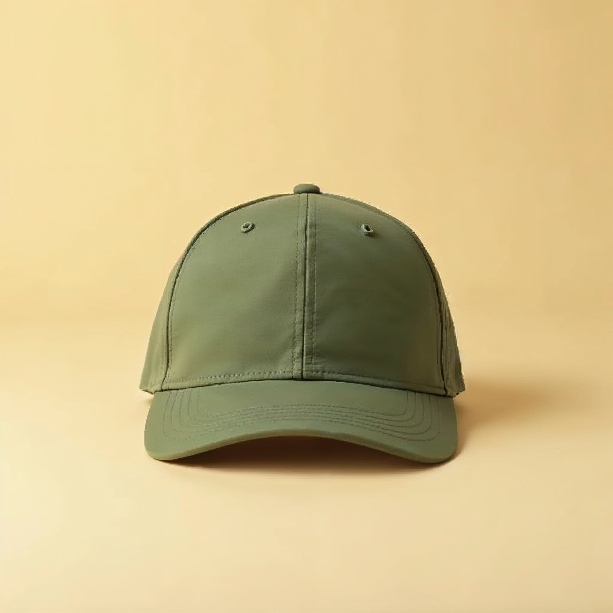
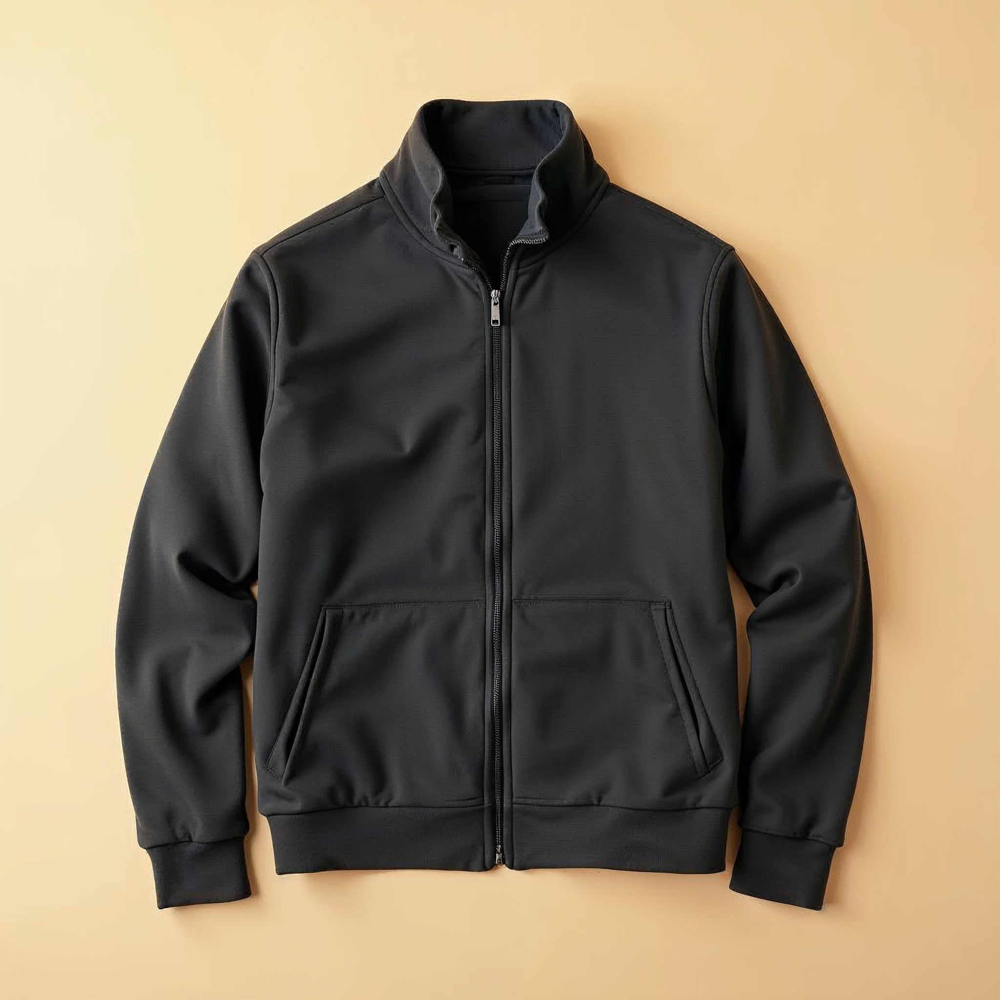
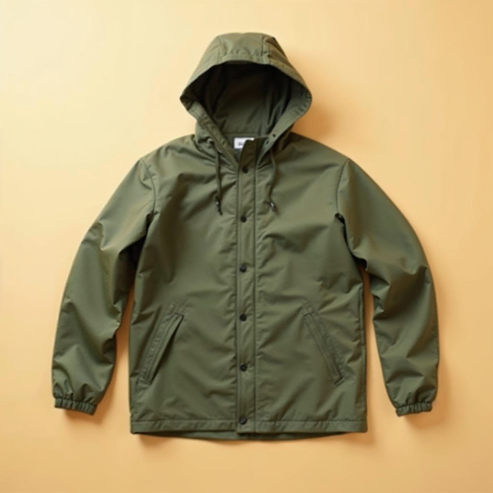
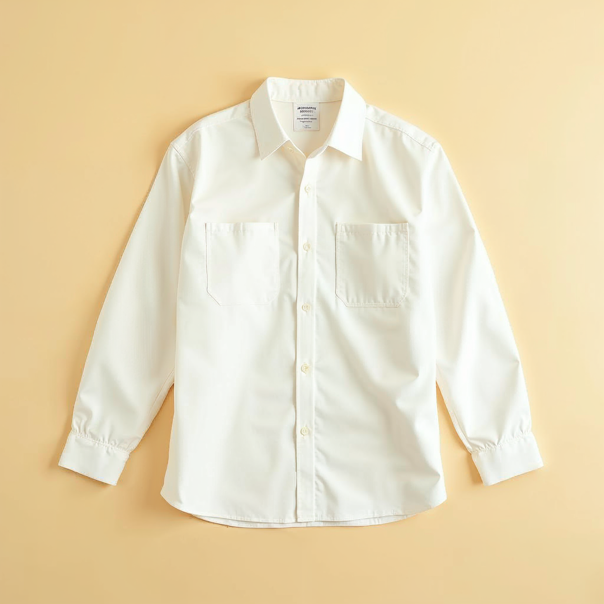
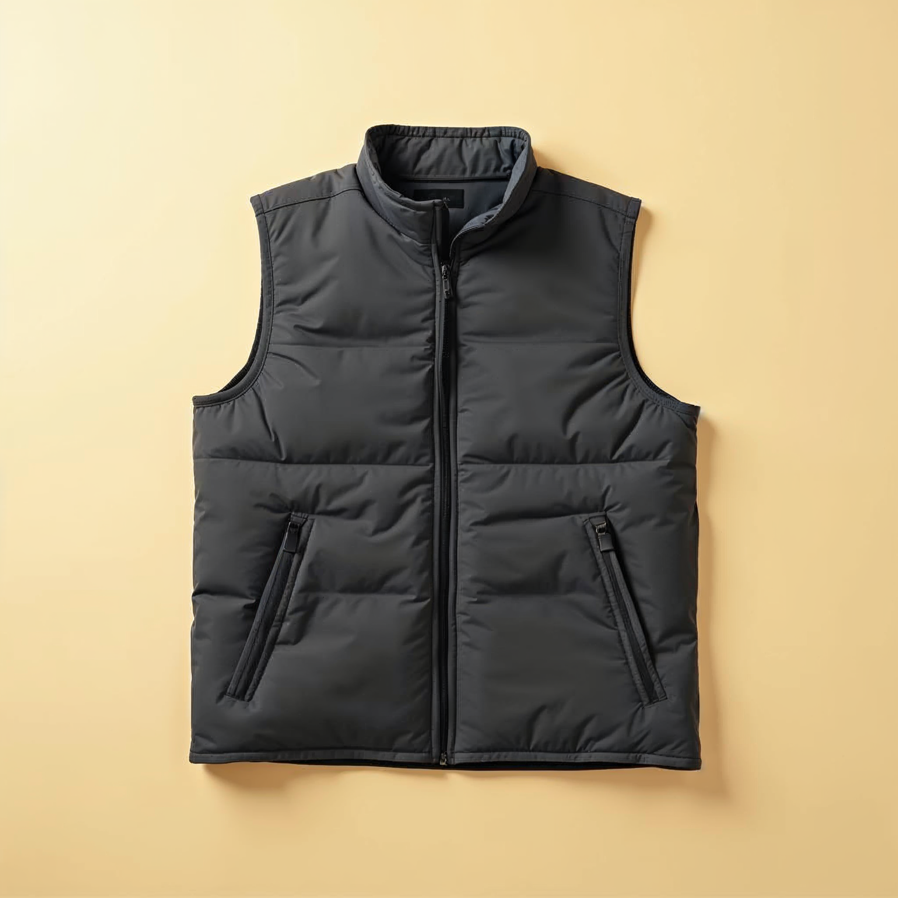
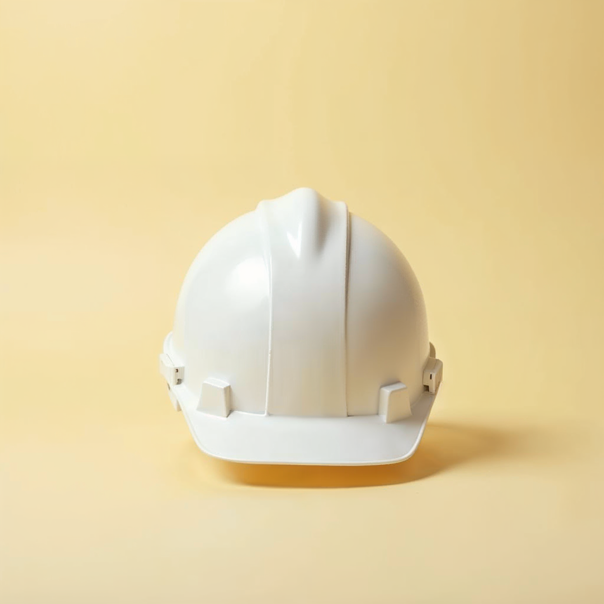

Vestuario de terreno: qué se borda y dónde
Ropa de trabajo, no merchandising
Landera no regala poleras. Viste al equipo que opera: jockey, polar, cortaviento, camisa, chaleco y casco. Y en todos va la misma regla.
Qué se borda
El isotipo, a una tinta. El policromo no sobrevive al hilo bajo 5 cm y el logotipo completo se deforma en la tela. Verde sobre prenda clara; crema sobre prenda oscura.
Dónde
Pecho izquierdo, a 6 cm de alto (chaqueta, polar, chaleco, camisa). Frente del jockey a 5 cm. Frente del casco a 4 cm, en vinilo, no bordado.
El logotipo completo va sólo en la espalda de cortaviento y chaleco, a 24 cm de ancho, bordado o serigrafiado a una tinta, con la bajada Gestión Agrícola.
Colores de prenda
Verde oliva, gris carbón o crema. Nunca terracota: en terreno se reserva para la señal de seguridad.

JockeyIsotipo crema al frente · 5 cm · bordado

PolarIsotipo crema, pecho izquierdo · 6 cm · bordado

CortavientoIsotipo al pecho · logotipo completo en la espalda, 24 cm

CamisaIsotipo verde sobre el bolsillo · 5 cm · bordado

ChalecoIsotipo al pecho · logotipo en la espalda

CascoIsotipo verde al frente · 4 cm · vinilo, no bordado
La espaldaÚnico lugar del logotipo completo · una tinta · Gestión Agrícola
Lo que no se haceLogotipo completo a color al pecho · bajada corporativa
Invariables
Se borda el isotipo a una tinta: verde sobre prenda clara, crema sobre oscura · pecho izquierdo a 6 cm; jockey 5 cm; casco 4 cm en vinilo · logotipo completo sólo en la espalda, 24 cm, una tinta, Gestión Agrícola · prendas verde oliva, gris carbón o crema · nunca policromo bajo 5 cm, nunca terracota en prenda.
Variables
La prenda y el proveedor · bordado o serigrafía en la espalda según la tela · el nombre del predio bajo el isotipo en la espalda, opcional (lámina 34) · manga o costura con el hilo verde, si el proveedor lo ofrece.
⚠ Prendas de referencia generadas — el bordado real se aprueba sobre muestra física
33 · Aplicaciones
Landera · Manual de marca